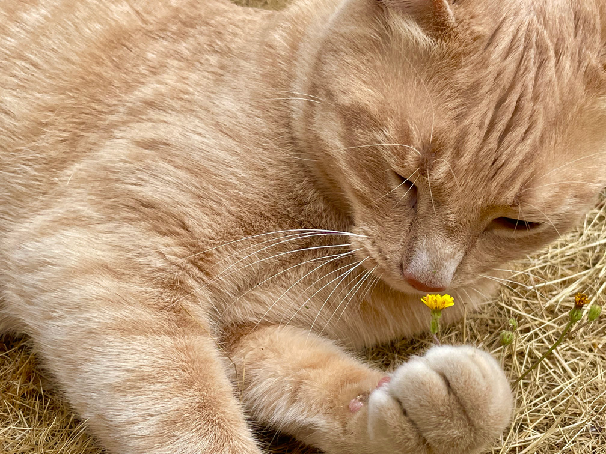
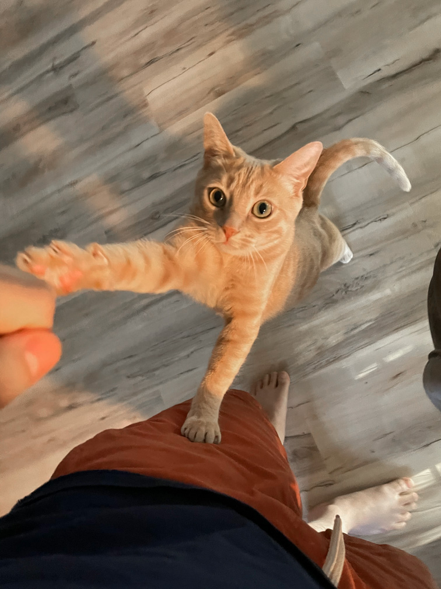
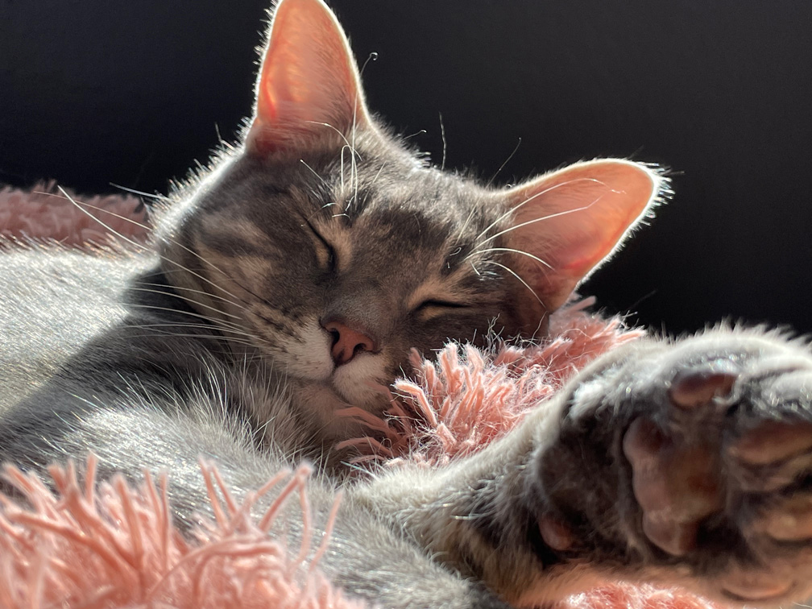
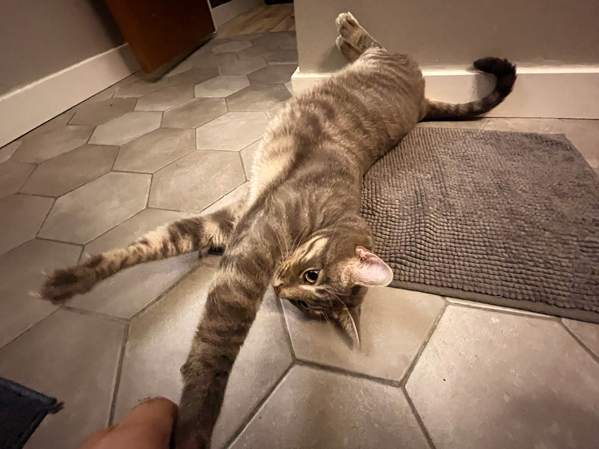

Meet the Family!
Winston
Winston was born on Novermber 10th, 2017 for a foster family. He's a loyal and loving furry family member. He got the name Puppy Kitty do to his ability to do tricks. For treats, he'll do the following tricks on command:
- Sit
- Shake (both paws)
- Hug/squeeze my hand
- Lick the back of my hand
- Play dead
- Jump through a hoop
He is quite the smart little man!
Murphy
Murphy is Winston's biological brother. He joined the family about a year and a half after Winston due to an unfortunate event that occured to his other brother. When Murphy lost his brother Junior, the forster family asked if they could reuinite him to his other brother. Every since then then, they have been inseperable. Murphy has the cutest little meow and gives the best cuddles!
